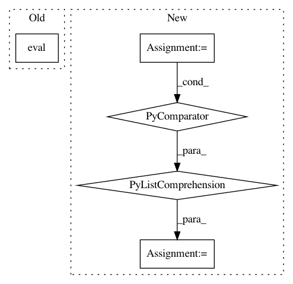

b95fcf7f52aca8ad0b1afb3cfc64c8eed534fafe,tests/keras/backend/backend_test.py,TestBackend,test_gather,#TestBackend#,331
Before Change
inds_th = KTH.variable(inds, dtype="int32")
inds_tf = KTF.variable(inds, dtype="int32")
th_z = KTH.gather(ref_th, inds_th)
th_result = KTH.eval(th_z)
tf_result = KTF.eval(KTF.gather(ref_tf, inds_tf))
assert_allclose(tf_result, th_result, atol=1e-05)
After Change
shape = (10, 2, 3)
ref = np.arange(np.prod(shape)).reshape(shape)
inds = [1, 3, 7, 9]
z_list = [k.eval(k.gather(k.variable(ref), k.variable(inds, dtype="int32")))
for k in BACKENDS]
assert_list_pairwise(z_list)
assert_list_keras_shape(z_list)
In pattern: SUPERPATTERN
Frequency: 3
Non-data size: 5
Instances
Project Name: keras-team/keras
Commit Name: b95fcf7f52aca8ad0b1afb3cfc64c8eed534fafe
Time: 2017-07-29
Author: me@taehoonlee.com
File Name: tests/keras/backend/backend_test.py
Class Name: TestBackend
Method Name: test_gather
Project Name: keras-team/keras
Commit Name: b95fcf7f52aca8ad0b1afb3cfc64c8eed534fafe
Time: 2017-07-29
Author: me@taehoonlee.com
File Name: tests/keras/backend/backend_test.py
Class Name: TestBackend
Method Name: test_eye
Project Name: keras-team/keras
Commit Name: 029461c7d1fe7a6927a6f9d0fa13dbf49543b413
Time: 2019-03-14
Author: abhai.dilip@gmail.com
File Name: keras/backend/cntk_backend.py
Class Name:
Method Name: batch_get_value